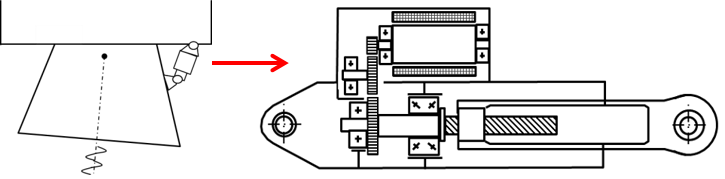

6.5. Optimization of a motor/reducer set for a high dynamic application#
Written by Marc Budinger, INSA Toulouse, France
For applications wigh high bandwith mission profile and with high acceleration, the choice of a motor and a gearbox depends on a compromise function of the motor inertia and the reduction ratio.
Scipy and math packages will be used for this notebook in order to illustrate the optimization algorithms of python.
import scipy
import scipy.optimize
from math import pi
import timeit
6.5.1. Objectives and specifications#
The objective is to select the reduction ratio of a gear reducer in order to minimize the mass of the motor.
The application have to ensure :
a max force \(F_{load}\) of \(48 kN\) and a max acceleration of \(a_{max}=11.68 m/s²\)
a max speed \(v_{max}\) of 0.22 m/s
We will give here an example based on a linear actuator with a preselected roller screw (pitch of 10 mm/rev). We assume here, for simplification, the efficiency equal to 100%.
EMA components: 
# Specifications
Max_speed=.22 # [m/s] max speed
Max_acceleration=11.68 # [m/s²] max acceleration (comined with max force)
Max_load=48000 # [N] max force
# Assumptions
Pitch=10e-3/2/pi # [m/rad] roller screw pitch
6.5.2. Equations#
6.5.2.1. Sizing scenarios#
The brushless electric motor will be sized considering the maximum transient torque it has to deliver \(T_{max}\). This torque is calculated as the sum of maximal transient application load demand \(T_{load}\) and the additional inertia load, product of the motor inertia \(J_{mot}\) and its acceleration rate:
\(T_{max}=T_{load}+J_{mot}.\left(\frac{d\Omega}{dt}\right)_{max}\)
where:
\(T_{load}=F_{load}.p\)
\(\left(\frac{d\Omega}{dt}\right)_{max}=p.a_{max}\)
with \(p\) the pitch in \([m/rad]\)
The maximal speed of the motor have also to be compared to the maximal speed requested by the application:
\(\Omega_{max,motor}>p.v_{max}\)
6.5.2.2. Parameter estimation with scaling laws#
The needed characterics of the motor can be estinated through the following scaling laws:
\(M_{mot}=M_{ref}.\left(\frac{T_{max}}{T_{max,ref}}\right)^{3/3.5}\)
\(J_{mot}=J_{ref}.\left(\frac{T_{max}}{T_{max,ref}}\right)^{5/3.5}\)
\(\Omega_{max,motor}=\Omega_{ref}.\left(\frac{T_{max}}{T_{max,ref}}\right)^{-1/3.5}\)
where the reference values are: \(T_{max,ref}=13.4 N.m\), \(\Omega_{ref}=754 rad/s\), \(J_{ref}=2.9.10^{-4} kg.m^2\), \(M_{ref}=3.8 kg\).
6.5.3. Sizing code#
An algebraic loop appears in the previous equations since the selection torque of the motor and the inertia of the motor are linked. To break the loop, an oversizing coefficient can be introduced to adapt equation and reuse the original one as a constraint:
\(T_{max}=T_{load}+J_{mot}.\left(\frac{d\Omega}{dt}\right)_{max}\)
becomes:
\(T_{max}=k_{ov}.T_{load}\)
\(T_{max}>T_{load}+J_{mot}.\left(\frac{d\Omega}{dt}\right)_{max}\)
The final optimization problem depends thus of 2 parameters:
the reduction ratio of the gearbox \(N\)
the oversizing coefficient of the motor \(k_{ov}\)
More details in the setting up of sizing code can be found in the following paper:
Reysset, A., Budinger, M., & Maré, J. C. (2015). Computer-aided definition of sizing procedures and optimization problems of mechatronic systems. Concurrent Engineering, 23(4), 320-332.
The sizing code is defined here in a function which can give:
an evaluation of the objective: here the motor mass
an evaluation of the constraints: here the speed margin and the torque margin
# Reference parameters for scaling laws
Tmax_ref=13.4 # [N.m]
Wmax_ref=754 # [rad/s]
Jref=2.9e-4/4 # [kg.m²]
Mref=3.8 # [kg]
# -----------------------
# sizing code
# -----------------------
# inputs:
# - param: optimisation variables vector (reduction ratio, oversizing coefficient)
# - arg: selection of output
# output:
# - objective if arg='Obj', problem characteristics if arg='Prt', constraints other else
def SizingCode(param, arg):
# Variables
N_reduc=param[0]
k_oversizing=param[1]
# Torque motor estimation
Tem_est= k_oversizing*Max_load*Pitch/N_reduc
# Scaling laws
Mass=Mref*(Tem_est/Tmax_ref)**(3/3.5)
Inertia=Jref*(Tem_est/Tmax_ref)**(5/3.5)
Speed=Wmax_ref*(Tem_est/Tmax_ref)**(-1/3.5)
# Exact torque calculation with motor inertia
Tem_max=Max_load*Pitch/N_reduc+Inertia*Max_acceleration*N_reduc/Pitch
# Objective and contraints
if arg=='Obj':
return Mass/10
elif arg=='Prt':
print("* Optimisation variables:")
print(" Reduction ratio N_reduc = %.2f"% N_reduc)
print(" Oversizing coefficient k_oversizing = %.2f"% k_oversizing)
print("* Components characteristics:")
print(" Motor torque = %.2f N.m" % Tem_est)
print(" Motor mass = %.2f kg" % Mass)
print("* Constraints (should be >0):")
print(" Speed margin Speed_motor-N_reduc*Max_speed/Pitch= %.3f" % (Speed-N_reduc*Max_speed/Pitch))
print(" Torque margin Tem_est-Tem_max= %.3f " %(Tem_est-Tem_max))
else:
return [Speed-N_reduc*Max_speed/Pitch, Tem_est-Tem_max]
6.5.4. Optimization problem#
We will now use the opmization algorithms of the Scipy package to solve and optimize the configuration. We use here the SLQP algorithm without explicit expression of the gradient (Jacobian). A short course on Multidisplinary Gradient optimization algorithms and gradient optimization algorithm is given here:
Joaquim R. R. A. Martins (2012). A Short Course on Multidisciplinary Design Optimization. Univeristy of Michigan
The first step is to give an initial value of optimisation variables:
#Variables d'optimisation
N_reduc=2
k_oversizing=3
# Vector of parameters
parameters = scipy.array((N_reduc, k_oversizing))
---------------------------------------------------------------------------
KeyError Traceback (most recent call last)
File /opt/hostedtoolcache/Python/3.9.25/x64/lib/python3.9/site-packages/scipy/__init__.py:137, in __getattr__(name)
136 try:
--> 137 return globals()[name]
138 except KeyError:
KeyError: 'array'
During handling of the above exception, another exception occurred:
AttributeError Traceback (most recent call last)
Cell In[4], line 6
3 k_oversizing=3
5 # Vector of parameters
----> 6 parameters = scipy.array((N_reduc, k_oversizing))
File /opt/hostedtoolcache/Python/3.9.25/x64/lib/python3.9/site-packages/scipy/__init__.py:139, in __getattr__(name)
137 return globals()[name]
138 except KeyError:
--> 139 raise AttributeError(
140 f"Module 'scipy' has no attribute '{name}'"
141 )
AttributeError: Module 'scipy' has no attribute 'array'
We can print of the characterisitcs of the problem before optimization with the intitial vector of optimization variables:
# Initial characteristics before optimization
print("-----------------------------------------------")
print("Initial characteristics before optimization :")
SizingCode(parameters, 'Prt')
print("-----------------------------------------------")
-----------------------------------------------
Initial characteristics before optimization :
---------------------------------------------------------------------------
NameError Traceback (most recent call last)
Cell In[5], line 5
2 print("-----------------------------------------------")
3 print("Initial characteristics before optimization :")
----> 5 SizingCode(parameters, 'Prt')
6 print("-----------------------------------------------")
NameError: name 'parameters' is not defined
Then we can solve the problem and print of the optimized solution:
# optimization with SLSQP algorithm
contrainte=lambda x: SizingCode(x, 'Const')
objectif=lambda x: SizingCode(x, 'Obj')
result = scipy.optimize.fmin_slsqp(func=objectif, x0=parameters,
bounds=[(.1,10),(1,10)],
f_ieqcons=contrainte, iter=100, acc=1e-8)
# Final characteristics after optimization
print("-----------------------------------------------")
print("Final characteristics after optimization :")
SizingCode(result, 'Prt')
print("-----------------------------------------------")
---------------------------------------------------------------------------
NameError Traceback (most recent call last)
Cell In[6], line 4
2 contrainte=lambda x: SizingCode(x, 'Const')
3 objectif=lambda x: SizingCode(x, 'Obj')
----> 4 result = scipy.optimize.fmin_slsqp(func=objectif, x0=parameters,
5 bounds=[(.1,10),(1,10)],
6 f_ieqcons=contrainte, iter=100, acc=1e-8)
8 # Final characteristics after optimization
9 print("-----------------------------------------------")
NameError: name 'parameters' is not defined